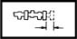

CYLINDER HEAD INTAKE AND EXHAUST SHAFTS
- Path
- Technical Data > Manufacturing data > 10 ENGINE > 1036 TIMING SYSTEM > CYLINDER HEAD INTAKE AND EXHAUST SHAFTS
- Kind
- technical data / specifications
- Applies to
- all engines; all production periods
- Interactive page
- https://sloeber94.github.io/elrnDB-aGt/en/#/2921842
Applies to: all engines; all production periods
Camshaft bearing diameter (mm) | Validity |  | ||
|---|---|---|---|---|
26.959 ÷ 26.980 | 3.2 V6 | |||
Camshaft nominal cam lift (mm) | Validity |  | ||
9.30 | 3.2 V6 | |||
Camshaft end float (mm) | Validity |  | ||
|---|---|---|---|---|
0.060 ÷ 0.201 | 3.2 V6 | |||